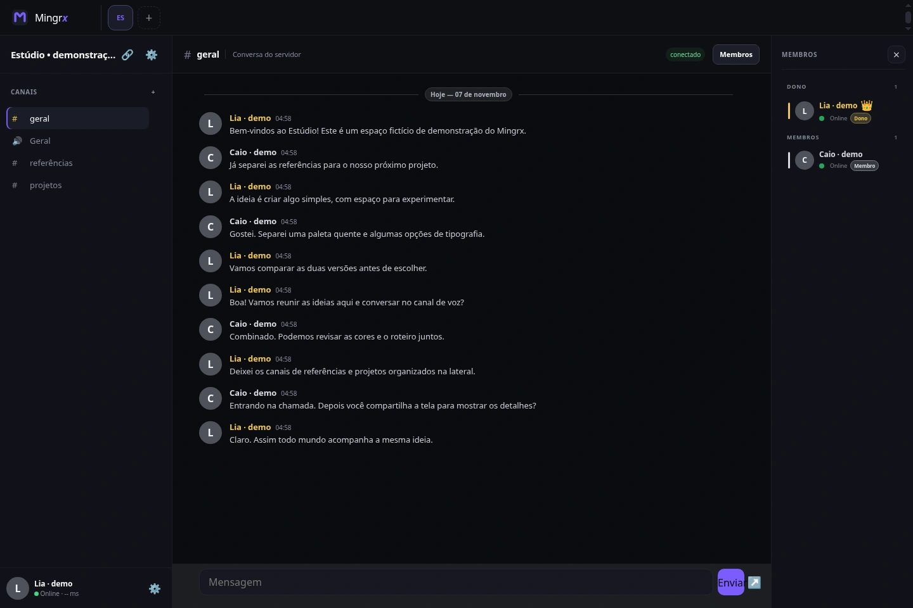
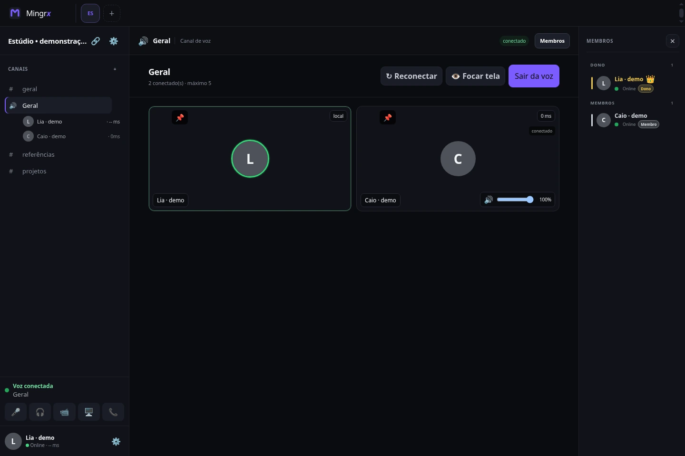

Mensagens, chamadas.Seu grupo, junto.
Do primeiro oi à última partida. Converse com seus amigos e compartilhe uma tela, uma ideia ou o momento.
Gratuito para Windows 10 e 11.
Instalador oficial pelo GitHub. Aplicativo para Windows.
Copie este endereço: https://mingrx.site/


Cada assunto
no seu lugar.
Uma conversa no privado. Um canal para o grupo. Organize o que vocês querem conversar sem perder o fio do assunto.
No privadoAdicione seus amigos e volte às conversas pela lista de recentes.
Em comunidadeSepare assuntos em canais de texto e reúna o grupo nas salas de voz.
A voz aproxima.
A tela acompanha.
Entre na chamada, ative a câmera quando quiser e mostre uma tela ou janela para o grupo.
Vale acompanhar uma partida, explicar uma ideia ou simplesmente ficar por perto.
O próximo oi
pode ser por aqui.
O Mingrx é gratuito. As conversas acontecem no aplicativo para Windows 10 e 11.
Baixe o Mingrx
Instale o aplicativo oficial pelo GitHub do projeto.
Baixar para WindowsConfirme seu e-mail
Crie sua conta no aplicativo e confirme o endereço para entrar.
Chame seus amigos
Adicione um amigo pelo nome ou abra um convite para entrar em uma comunidade.
Conversa boa começa
com informação clara.
Novas mensagens privadas entre versões compatíveis usam criptografia ponta a ponta. Mensagens antigas e de canais de comunidades não têm necessariamente essa mesma proteção.
A política explica o alcance da proteção, os dados usados pelo serviço e como pedir sua exclusão.
Entenda a privacidadeO Mingrx é gratuito?
Sim. A versão atual do aplicativo para Windows pode ser baixada gratuitamente.
Funciona no celular ou navegador?
O aplicativo atual é para Windows 10 e 11. No celular, você pode conhecer o Mingrx e copiar o link do site para abrir no computador.
Como entro em uma comunidade?
Abra um link de convite do mingrx.site. A página tenta abrir o aplicativo. Depois de instalar, abra o mesmo convite novamente para continuar.
Preciso reinstalar a cada atualização?
O aplicativo oficial verifica novas versões e pode adiar a instalação enquanto você está em chamada ou editando uma mensagem. Também é possível conferir pelo menu do ícone do Mingrx perto do relógio do Windows.
Toda mensagem tem criptografia ponta a ponta?
Essa proteção se aplica às novas mensagens privadas entre clientes compatíveis. Mensagens antigas e de canais não têm necessariamente o mesmo formato. Veja os detalhes na política.
O grupo é seu.
A próxima conversa também.
Gratuito para Windows 10 e 11.
Download oficial pelo GitHub.
Copie: https://mingrx.site/